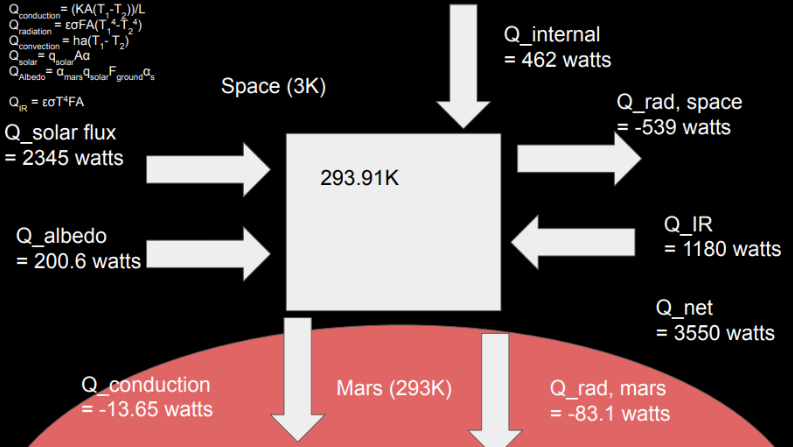
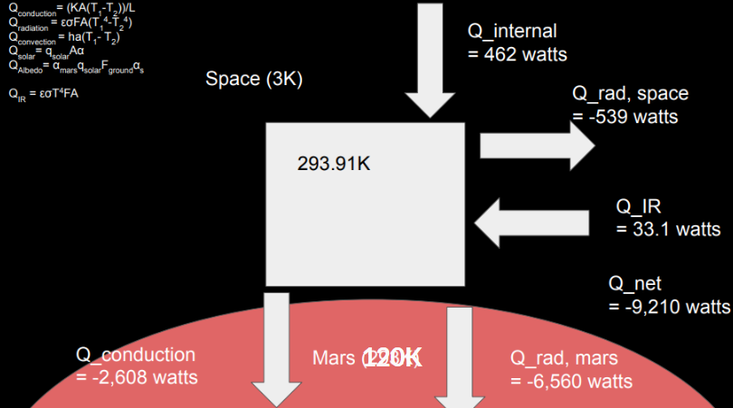

Designing the thermal architecture for a robotic subsurface ice exploration rover operating at Elysium Mons, Mars.
The WALL-E rover was designed to investigate subsurface ice deposits and volcanic history within a 10-mile operational radius of Elysium Mons. The mission required all payloads to remain operational across a 173 K diurnal temperature swing, with no active refrigeration and a peak power budget of 545 W.
As Thermal Control Systems Lead, I was responsible for the full TCS architecture: defining allowable temperature ranges for each payload, selecting passive and active thermal management mechanisms, conducting the thermal trade study, and coordinating with Mechanical, Electrical, and Science sub-teams to resolve interface conflicts.
Mars presents two simultaneous thermal failure modes. At 120 K, inadequately insulated components fall below their minimum operating temperature, causing electronics to fail and batteries to lose capacity. At peak solar loading, heat generated by the 545 W electrical system must be rejected or stored without exceeding component limits.
The TCS had to passively handle both extremes without active refrigeration, using only insulation, heat storage, and controlled radiation.
The steady-state design condition requires net heat flux to be zero at the operating temperature. For the rover chassis:
Thermal balance: generation and solar input must equal radiation and storage
Each mechanism was sized against this balance. Insulation thickness was set by the nighttime survival requirement. PCM storage capacity was set by the peak daytime heat load. Louver area was set by the maximum allowable steady-state temperature.

TCS Analysis: Component Allocation
Low-conductivity insulation wrapped around the chassis and instrument housings to limit conductive and radiative heat loss during the 120 K Martian night. Thickness was determined by the minimum survival temperature of the most cold-sensitive payload.
PCMs were selected to absorb latent heat during peak power operations, buffering component temperatures without requiring active cooling. Material selection was driven by melting point, latent heat capacity, and mass constraints from the 175 kg budget.
Bimetallic louvers modulate radiative heat rejection by opening and closing with temperature. They provide passive, autonomous regulation of the chassis surface emissivity, increasing heat rejection during peak load and closing to retain heat at night.
The trade study iterated across insulation and structural material candidates, evaluating thermal resistance against mass penalty. Each selection required sign-off against both the thermal balance and the 175 kg mass budget. The live documentation below tracks the full selection process.
TCS decisions directly constrained other sub-systems. Four interface conflicts required coordinated resolution:
Insulation layers added thickness to all mechanical interfaces. Structural brackets and mounting points required thermal breaks to prevent conduction paths that would bypass the insulation strategy.
Peak power draw of 545 W set the upper bound on the TCS heat load. I worked with the electrical team to map power dissipation by component so the PCM storage and louver sizing were based on actual heat flux, not worst-case estimates.
Several instruments required thermal isolation from the chassis to prevent conducted heat from introducing noise in temperature-sensitive measurements. Dedicated instrument housings with controlled thermal resistance were specified.
A key retrospective finding: integrating TCS sensor data with the command and data handling unit would allow autonomous load-shedding when approaching thermal limits, removing the need for ground intervention during peak thermal events.